Cocktail maxxing on a budget.
You only need a few bottles to start exploring the fundamentals of classic cocktails.
Juice with vodka is a regression. Plenty of modern drinks came out of these older shapes, and those flavor profiles are still terribly underrated.
This is a small utility. Broad categories, few ingredients, little expense. The complete catalog of classic and modern drinks, with every niche bottle named, can wait until you know what you actually like.
I love cocktail books. Hunting down a niche brand and some exotic bottle just to make a drink I might not even like is a frustrating way to learn. Select what you have. See what opens. Buy the bottle that unlocks the most.
Using it
Your shelf
Tick what you own on the Bar tab. The menu then knows what you can pour, and the number beside a bottle you do not have is how many new drinks buying it opens. Tap that number to see them.
Reading a drink
Tap a drink for the recipe. The small code beside the name is the shorthand off my printed menu, and the Key tab decodes every letter of it.
Sharing
Share menu turns your shelf into one link. Opening somebody's link shows you what their bar pours and leaves your own shelf alone until you tap Make this my shelf. A single drink shares the same way, from the Share tab inside its recipe.
Printing
Print menu gives you the list you are looking at in black and white, two columns on US Letter. The ticks decide whether the glass, the recipe, the taste, the history and the shorthand key come with it.
Offline
Add it to your home screen and it keeps working with no signal. Your shelf is stored on your phone. There is no account and nothing to sign into.
Tools
These are the tools I use. Nothing on the menu needs anything else.
-
Boston shaker
Two metal tins. The small one goes into the big one at an angle and a slap on the side breaks the seal. I shake every shaken drink in this and stir the stirred ones in the big tin. I do not own a mixing glass.
-
Japanese jigger
Two ounces on one side and one ounce on the other, with the measurements etched on the inside where you can see them while you pour. The 2 oz side is marked at 1, 1 1/2 and 2. The 1 oz side is marked at 1/4, 1/2, 3/4 and 1. That covers every measurement in these recipes. I use two of them. Most of the sticky ingredients are an ounce or less, so I measure those on the 1 oz side of the second jigger and never have to flip a sticky jigger back over to the 2 oz side.
-
Hawthorne strainer
The spring fits inside the rim of the tin and holds the ice back while the drink pours through. I use it for stirred and shaken drinks both. Pushing the gate forward tightens the gap when a shaken drink has ice shards in it.
-
Barspoon
Long and twisted with a teardrop bowl. A b in the shorthand is one level barspoon. The twist lets it spin between two fingers in the tin without pushing the ice around.
-
Citrus peeler
A Y peeler. It takes a wide, thin strip of peel and leaves the pith on the fruit. That strip is the twist: l is lemon, L is lime, o is orange.
-
Paring knife
A small pointed knife. I halve citrus with it before juicing and cut lime wheels and apple fans with it. Lw is a lime wheel and a is an apple fan.
-

Dasher bottles
Bitters come in bottles that give an uneven dash. A dasher bottle gives the same dash every time, so 2 dashes of Angostura is the same amount in every drink.
-
Pourers
Speed pourers in the bottles I open most. A pourer gives a thin, steady stream, so a jigger fills to the line without a glug.
-
Bar mat
A rubber mat to build drinks on. It catches drips and keeps a wet tin from sliding around.
Glassware
Three glasses cover the whole menu. The rocks glass and the highball are a given. The third is a Nick & Nora, and it is the one I want to make a case for.
-
Nick & Nora
The c in the shorthand. A small stemmed glass with a bowl more upright than a coupe. Every drink served up goes in one of these, no ice.
It is the perfect catch-all for the coupe. A Margarita is as elegant in it as a neat sherry, and you would feel silly sipping sherry from an audacious Margarita glass. The Martini glass is a versatile coupe too, but an odd choice for a dessert wine. Everything looks elegant in a Nick & Nora.
Nothing here stops you amassing an impressive collection of specialty glassware. I am only saying that a couple of rocks glasses and a couple of Nick & Noras in the fridge means you are ready at a moment's notice to serve anything chilled.
-
Rocks glass
The r and the R. A short tumbler with a heavy base. r is empty, R has ice: one large cube, or cubes, depending on the drink.
-
Highball glass
The h and the H. A tall glass. h is a fizz with no ice, so the foam has room. H is packed with ice with the mixer poured over it.
Analytics
This site is a hobby. I run Google Analytics on it so I can see how it gets used: which tab someone opened, which drink they expanded, which bottle they selected, whether a menu was printed or shared. That is the whole list.
It tells me nothing about who you are. There is no account, no sign-in, no name attached to any of it. Your shelf stays on your phone unless you share it yourself. I do not sell the numbers and I do not market to anyone. I read them so I know which parts of this are worth more work. So far nobody has ever opened a Tip Top, and it is a great drink.
The events are in the source: track() in assets/app.js. A content blocker stops all of it and the site works exactly the same.
Version
You are running dev. Every release is at github.com/cjimti/drink/releases.
© 2026 Craig Johnston
Pouring…